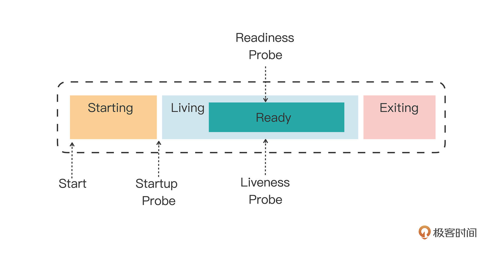

- 00 开篇词 迎难而上，做云原生时代的弄潮儿.md.html
- 00 课前准备 动手实践才是最好的学习方式.md.html
- 01 初识容器：万事开头难.md.html
- 02 被隔离的进程：一起来看看容器的本质.md.html
- 03 容器化的应用：会了这些你就是Docker高手.md.html
- 04 创建容器镜像：如何编写正确、高效的Dockerfile.md.html
- 05 镜像仓库：该怎样用好Docker Hub这个宝藏.md.html
- 06 打破次元壁：容器该如何与外界互联互通.md.html
- 07 实战演练：玩转Docker.md.html
- 08 视频：入门篇实操总结.md.html
- 09 走近云原生：如何在本机搭建小巧完备的Kubernetes环境.md.html
- 10 自动化的运维管理：探究Kubernetes工作机制的奥秘.md.html
- 11 YAML：Kubernetes世界里的通用语.md.html
- 12 Pod：如何理解这个Kubernetes里最核心的概念？.md.html
- 13 Job_CronJob：为什么不直接用Pod来处理业务？.md.html
- 14 ConfigMap_Secret：怎样配置、定制我的应用.md.html
- 15 实战演练：玩转Kubernetes（1）.md.html
- 16 视频：初级篇实操总结.md.html
- 17 更真实的云原生：实际搭建多节点的Kubernetes集群.md.html
- 18 Deployment：让应用永不宕机.md.html
- 19 Daemonset：忠实可靠的看门狗.md.html
- 20 Service：微服务架构的应对之道.md.html
- 21 Ingress：集群进出流量的总管.md.html
- 22 实战演练：玩转Kubernetes（2）.md.html
- 23 视频：中级篇实操总结.md.html
- 24 PersistentVolume：怎么解决数据持久化的难题？.md.html
- 25 PersistentVolume + NFS：怎么使用网络共享存储？.md.html
- 26 StatefulSet：怎么管理有状态的应用？.md.html
- 27 滚动更新：如何做到平滑的应用升级降级？.md.html
- 28 应用保障：如何让Pod运行得更健康？.md.html
- 29 集群管理：如何用名字空间分隔系统资源？.md.html
- 30 系统监控：如何使用Metrics Server和Prometheus？.md.html
- 31 网络通信：CNI是怎么回事？又是怎么工作的？.md.html
- 32 实战演练：玩转Kubernetes（3）.md.html
- 33 视频：高级篇实操总结.md.html
- 加餐 docker-compose：单机环境下的容器编排工具.md.html
- 加餐 谈谈Kong Ingress Controller.md.html
- 结束语 是终点，更是起点.md.html
- 捐赠
28 应用保障：如何让Pod运行得更健康？
你好，我是Chrono。
在前面这么多节的课程中，我们都是在研究如何使用各种API对象来管理、操作Pod，而对Pod本身的关注却不是太多。
作为Kubernetes里的核心概念和原子调度单位，Pod的主要职责是管理容器，以逻辑主机、容器集合、进程组的形式来代表应用，它的重要性是不言而喻的。
那么今天我们回过头来，在之前那些上层API对象的基础上，一起来看看在Kubernetes里配置Pod的两种方法：资源配额Resources、检查探针Probe，它们能够给Pod添加各种运行保障，让应用运行得更健康。
容器资源配额
早在[第2讲]的时候我们就说过，创建容器有三大隔离技术：namespace、cgroup、chroot。其中的namespace实现了独立的进程空间，chroot实现了独立的文件系统，但唯独没有看到cgroup的具体应用。
cgroup的作用是管控CPU、内存，保证容器不会无节制地占用基础资源，进而影响到系统里的其他应用。
不过，容器总是要使用CPU和内存的，该怎么处理好需求与限制这两者之间的关系呢？
Kubernetes的做法与我们在[第24讲]里提到的PersistentVolumeClaim用法有些类似，就是容器需要先提出一个“书面申请”，Kubernetes再依据这个“申请”决定资源是否分配和如何分配。
但是CPU、内存与存储卷有明显的不同，因为它是直接“内置”在系统里的，不像硬盘那样需要“外挂”，所以申请和管理的过程也就会简单很多。
具体的申请方法很简单，只要在Pod容器的描述部分添加一个新字段 resources 就可以了，它就相当于申请资源的 Claim。
来看一个YAML示例：
apiVersion: v1
kind: Pod
metadata:
name: ngx-pod-resources
spec:
containers:
- image: nginx:alpine
name: ngx
resources:
requests:
cpu: 10m
memory: 100Mi
limits:
cpu: 20m
memory: 200Mi
这个YAML文件定义了一个Nginx Pod，我们需要重点学习的是 containers.resources，它下面有两个字段：
- “requests”，意思是容器要申请的资源，也就是说要求Kubernetes在创建Pod的时候必须分配这里列出的资源，否则容器就无法运行。
- “limits”，意思是容器使用资源的上限，不能超过设定值，否则就有可能被强制停止运行。
在请求 cpu 和 memory 这两种资源的时候，你需要特别注意它们的表示方式。
内存的写法和磁盘容量一样，使用 Ki、Mi、Gi 来表示 KB、MB、GB，比如 512Ki、100Mi、0.5Gi 等。
而CPU因为在计算机中数量有限，非常宝贵，所以Kubernetes允许容器精细分割CPU，即可以1个、2个地完整使用CPU，也可以用小数0.1、0.2的方式来部分使用CPU。这其实是效仿了UNIX“时间片”的用法，意思是进程最多可以占用多少CPU时间。
不过CPU时间也不能无限分割，Kubernetes里CPU的最小使用单位是0.001，为了方便表示用了一个特别的单位 m，也就是“milli”“毫”的意思，比如说500m就相当于0.5。
现在我们再来看这个YAML，你就应该明白了，它向系统申请的是1%的CPU时间和100MB的内存，运行时的资源上限是2%CPU时间和200MB内存。有了这个申请，Kubernetes就会在集群中查找最符合这个资源要求的节点去运行Pod。
下面是我在网上找的一张动图，Kubernetes会根据每个Pod声明的需求，像搭积木或者玩俄罗斯方块一样，把节点尽量“塞满”，充分利用每个节点的资源，让集群的效益最大化。

你可能会有疑问：如果Pod不写 resources 字段，Kubernetes会如何处理呢？
这就意味着Pod对运行的资源要求“既没有下限，也没有上限”，Kubernetes不用管CPU和内存是否足够，可以把Pod调度到任意的节点上，而且后续Pod运行时也可以无限制地使用CPU和内存。
我们课程里是实验环境，这样做是当然是没有问题的，但如果是生产环境就很危险了，Pod可能会因为资源不足而运行缓慢，或者是占用太多资源而影响其他应用，所以我们应当合理评估Pod的资源使用情况，尽量为Pod加上限制。
看到这里估计你会继续追问：如果预估错误，Pod申请的资源太多，系统无法满足会怎么样呢？
让我们来试一下吧，先删除Pod的资源限制 resources.limits，把 resources.request.cpu 改成比较极端的“10”，也就是要求10个CPU：
...
resources:
requests:
cpu: 10
然后使用 kubectl apply 创建这个Pod，你可能会惊奇地发现，虽然我们的Kubernetes集群里只有3个CPU，但Pod也能创建成功。
不过我们再用 kubectl get pod 去查看的话，就会发现它处于“Pending”状态，实际上并没有真正被调度运行：
使用命令 kubectl describe 来查看具体原因，会发现有这么一句提示：

这就很明确地告诉我们Kubernetes调度失败，当前集群里的所有节点都无法运行这个Pod，因为它要求的CPU实在是太多了。
什么是容器状态探针
现在，我们使用 resources 字段加上资源配额之后，Pod在Kubernetes里的运行就有了初步保障，Kubernetes会监控Pod的资源使用情况，让它既不会“饿死”也不会“撑死”。
但这只是最初级的运行保障，如果你开发或者运维过实际的后台服务就会知道，一个程序即使正常启动了，它也有可能因为某些原因无法对外提供服务。其中最常见的情况就是运行时发生“死锁”或者“死循环”的故障，这个时候从外部来看进程一切都是正常的，但内部已经是一团糟了。
所以，我们还希望Kubernetes这个“保姆”能够更细致地监控Pod的状态，除了保证崩溃重启，还必须要能够探查到Pod的内部运行状态，定时给应用做“体检”，让应用时刻保持“健康”，能够满负荷稳定工作。
那应该用什么手段来检查应用的健康状态呢？
因为应用程序各式各样，对于外界来说就是一个黑盒子，只能看到启动、运行、停止这三个基本状态，此外就没有什么好的办法来知道它内部是否正常了。
所以，我们必须把应用变成灰盒子，让部分内部信息对外可见，这样Kubernetes才能够探查到内部的状态。
这么说起来，检查的过程倒是有点像现在我们很熟悉的核酸检测，Kubernetes用一根小棉签在应用的“检查口”里提取点数据，就可以从这些信息来判断应用是否“健康”了，这项功能也就被形象地命名为“探针”（Probe），也可以叫“探测器”。
Kubernetes为检查应用状态定义了三种探针，它们分别对应容器不同的状态：
- Startup，启动探针，用来检查应用是否已经启动成功，适合那些有大量初始化工作要做，启动很慢的应用。
- Liveness，存活探针，用来检查应用是否正常运行，是否存在死锁、死循环。
- Readiness，就绪探针，用来检查应用是否可以接收流量，是否能够对外提供服务。
你需要注意这三种探针是递进的关系：应用程序先启动，加载完配置文件等基本的初始化数据就进入了Startup状态，之后如果没有什么异常就是Liveness存活状态，但可能有一些准备工作没有完成，还不一定能对外提供服务，只有到最后的Readiness状态才是一个容器最健康可用的状态。
初次接触这三种状态可能有点难理解，我画了一张图，你可以看一下状态与探针的对应关系：

那Kubernetes具体是如何使用状态和探针来管理容器的呢？
如果一个Pod里的容器配置了探针，Kubernetes在启动容器后就会不断地调用探针来检查容器的状态：
- 如果Startup探针失败，Kubernetes会认为容器没有正常启动，就会尝试反复重启，当然其后面的Liveness探针和Readiness探针也不会启动。
- 如果Liveness探针失败，Kubernetes就会认为容器发生了异常，也会重启容器。
- 如果Readiness探针失败，Kubernetes会认为容器虽然在运行，但内部有错误，不能正常提供服务，就会把容器从Service对象的负载均衡集合中排除，不会给它分配流量。
知道了Kubernetes对这三种状态的处理方式，我们就可以在开发应用的时候编写适当的检查机制，让Kubernetes用“探针”定时为应用做“体检”了。
在刚才图的基础上，我又补充了Kubernetes的处理动作，看这张图你就能很好地理解容器探针的工作流程了：

如何使用容器状态探针
掌握了资源配额和检查探针的概念，我们进入今天的高潮部分，看看如何在Pod的YAML描述文件里定义探针。
startupProbe、livenessProbe、readinessProbe这三种探针的配置方式都是一样的，关键字段有这么几个：
- periodSeconds，执行探测动作的时间间隔，默认是10秒探测一次。
- timeoutSeconds，探测动作的超时时间，如果超时就认为探测失败，默认是1秒。
- successThreshold，连续几次探测成功才认为是正常，对于startupProbe和livenessProbe来说它只能是1。
- failureThreshold，连续探测失败几次才认为是真正发生了异常，默认是3次。
至于探测方式，Kubernetes支持3种：Shell、TCP Socket、HTTP GET，它们也需要在探针里配置：
- exec，执行一个Linux命令，比如ps、cat等等，和container的command字段很类似。
- tcpSocket，使用TCP协议尝试连接容器的指定端口。
- httpGet，连接端口并发送HTTP GET请求。
要使用这些探针，我们必须要在开发应用时预留出“检查口”，这样Kubernetes才能调用探针获取信息。这里我还是以Nginx作为示例，用ConfigMap编写一个配置文件：
apiVersion: v1
kind: ConfigMap
metadata:
name: ngx-conf
data:
default.conf: |
server {
listen 80;
location = /ready {
return 200 'I am ready';
}
}
你可能不是太熟悉Nginx的配置语法，我简单解释一下。
在这个配置文件里，我们启用了80端口，然后用 location 指令定义了HTTP路径 /ready，它作为对外暴露的“检查口”，用来检测就绪状态，返回简单的200状态码和一个字符串表示工作正常。
现在我们来看一下Pod里三种探针的具体定义：
apiVersion: v1
kind: Pod
metadata:
name: ngx-pod-probe
spec:
volumes:
- name: ngx-conf-vol
configMap:
name: ngx-conf
containers:
- image: nginx:alpine
name: ngx
ports:
- containerPort: 80
volumeMounts:
- mountPath: /etc/nginx/conf.d
name: ngx-conf-vol
startupProbe:
periodSeconds: 1
exec:
command: ["cat", "/var/run/nginx.pid"]
livenessProbe:
periodSeconds: 10
tcpSocket:
port: 80
readinessProbe:
periodSeconds: 5
httpGet:
path: /ready
port: 80
StartupProbe使用了Shell方式，使用 cat 命令检查Nginx存在磁盘上的进程号文件（/var/run/nginx.pid），如果存在就认为是启动成功，它的执行频率是每秒探测一次。
LivenessProbe使用了TCP Socket方式，尝试连接Nginx的80端口，每10秒探测一次。
ReadinessProbe使用的是HTTP GET方式，访问容器的 /ready 路径，每5秒发一次请求。
现在我们用 kubectl apply 创建这个Pod，然后查看它的状态：

当然，因为这个Nginx应用非常简单，它启动后探针的检查都会是正常的，你可以用 kubectl logs 来查看Nginx的访问日志，里面会记录HTTP GET探针的执行情况：

从截图中你可以看到，Kubernetes正是以大约5秒一次的频率，向URI /ready 发送HTTP请求，不断地检查容器是否处于就绪状态。
为了验证另两个探针的工作情况，我们可以修改探针，比如把命令改成检查错误的文件、错误的端口号：
startupProbe:
exec:
command: ["cat", "nginx.pid"] #错误的文件
livenessProbe:
tcpSocket:
port: 8080 #错误的端口号
然后我们重新创建Pod对象，观察它的状态。
当StartupProbe探测失败的时候，Kubernetes就会不停地重启容器，现象就是 RESTARTS 次数不停地增加，而livenessProbe和readinessProbePod没有执行，Pod虽然是Running状态，也永远不会READY：

因为failureThreshold的次数默认是三次，所以Kubernetes会连续执行三次livenessProbe TCP Socket探测，每次间隔10秒，30秒之后都失败才重启容器：

你也可以自己试着改一下readinessProbe，看看它失败时Pod会是什么样的状态。
小结
好了，今天我们学习了两种为Pod配置运行保障的方式：Resources和Probe。Resources就是为容器加上资源限制，而Probe就是主动健康检查，让Kubernetes实时地监控应用的运行状态。
再简单小结一下今天的内容：
- 资源配额使用的是cgroup技术，可以限制容器使用的CPU和内存数量，让Pod合理利用系统资源，也能够让Kubernetes更容易调度Pod。
- Kubernetes定义了Startup、Liveness、Readiness三种健康探针，它们分别探测应用的启动、存活和就绪状态。
- 探测状态可以使用Shell、TCP Socket、HTTP Get三种方式，还可以调整探测的频率和超时时间等参数。
课下作业
最后是课下作业时间，给你留两个思考题：
- 你能够解释一下Liveness和Readiness这两种探针的区别吗？
- 你认为Shell、TCP Socket、HTTP GET这三种探测方式各有什么优缺点？
欢迎在下方留言区留言参与讨论，课程快要完结了，感谢你坚持学习了这么久。我们下节课再见。

© 2019 - 2023 Liangliang Lee. Powered by gin and hexo-theme-book.